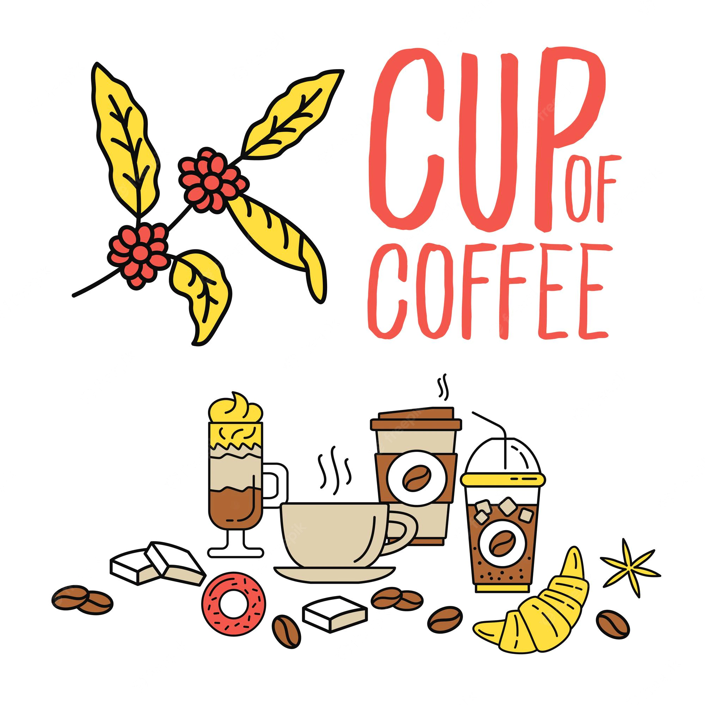

Welcome to My Website
Hey! What's up. please take coffe.
Coffee is a brewed drink prepared from roasted coffee beans,
the seeds of berries from certain flowering plants in the Coffea genus.
From the coffee fruit, the seeds are separated to produce a stable, raw product: unroasted green coffee.
The seeds are then roasted, a process which transforms them into a
consumable product: roasted coffee, which is ground into fine particles that are typically steeped in hot water before being filtered out,
producing a cup of coffee.
